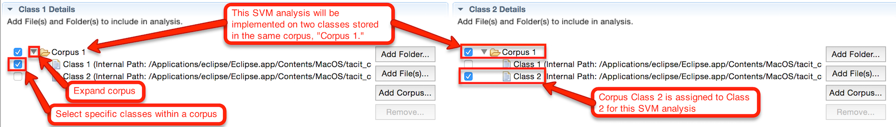

| Corpus Management | ||||||
| Overview |
| A text or document refers to the unit of analysis for text analysis, and a corpus is a collection of these documents. A document can refer to any length of text from a single tweet to an entire book.
TACIT's Corpus Management tool aims to provide a simple user interface to provide an easy and efficient way to manage different types of corpora (or sets of documents/text). The Corpus Management tool can be accessed under View in the main toolbar. Corpus Management allows users' corpora (documents/sets of text) to be compiled in TACIT at the beginning of a project so that the process of loading and managing the data need not to be repeated multiple times. The corpus management tool can import user data in multiple formats such as JSON, Microsoft Word and CSV files. After creating a corpus in TACIT, the program will automatically record and provide a summary log of how and when the data was collected as well as all analyses performed on that corpus (e.g. type of analysis, date and time of analysis). When such corpora are used for any analysis, users have the ability to filter their data on the basis of various parameters including tweet/comment data, keywords and associated hashtags (called metadata). |
| Basic Tutorial: Corpus Management |
| Creating a Corpus |
| To create a new corpus, click Add Corpus under the Corpora panel. This will open a new Corpus Details section to the right of the list of corpora.
Enter the name for this corpus in the Corpus ID text box, and specify the file format of the text/documents that will be in this corpus. TACIT currently supports Plain text, Twitter JSON, and Reddit JSON file formats.
You can change both the name of the corpus and the file format settings at any time by selecting the newly created corpus under Corpora.
If you no longer need a corpus/class, you can remove it by selecting it under Corpora and clicking the Remove button. Removing a corpus will remove all classes underneath it.
If you are creating a corpus of a JSON file or another file with multiple attributes, you will need to specify which attribute/section contains the text to be analyzed. |
| Adding Classes to a Corpus |
| After creating a corpus, it needs to be populated with documents. To add documents to a new corpus, select the corpus under
Corpora and click the Add Class button. This will open a Class Details section that contains two fields:
Class Name and Class Path . To create the new class, specify a Class Name and use the Browse button to select the
directory that contains the documents to be imported to the new class. After specifying the Class Name and Class Path, select the corpus
under Corpora and click the Save Corpus button in the Corpus Details section. This will save the new class
and the documents contained in the Class Path to the corpus for later use. To populate a corpus with multiple classes, repeat these steps
for each desired class.
Note: TACIT can implement a range of text analysis tools. Some of these tools require at least 2 classes of documents (e.g. the Support Vector Machines tool and the naive Bayes tool) and some of these tools can be implemented with documents that have not been assigned to any classes at all (e.g. Hierarchical and KMeans Clustering). The Corpus Management tool can be used for both of these cases. To create a corpus for documents that have no class labels, all documents can simply be entered into a single class. |
| Using Corpora with TACIT's Tools |
| To analyze documents contained in a TACIT corpus use the Add Corpus button to
specify the corpus for analysis. A corpus is structured like a single directory with classes contained
in the directory. After specifying a corpus with the Add Corpus button, the corpus directory can be
expanded using the grey arrow next to the corpus name (See Image 1) and specific classes within the
corpus can be excluded or included in the analysis.
You can also analyze a subset of a corpus by using the filter function for corpora with pre-determined attributes. For any corpus with pre-determined attributes you can click on Filter Corpus to restrict the analysis to only those texts that meet your specifications. For example if you have a JSON corpus with an attribute specifying author age, you you can indicate that you only want authors that are older than 60 by clicking on the Filter Corpus button, selecting the >function and entering 60 in the text box. In the same way, if you want to filter for posts by specific authors, the filter function can be used with the = sign and you can enter a string variable (such as author name) into the text box. Image 1. Corpus and Class Specification  To implement a classification tool such as naive Bayes or SVM on a corpus, the same corpus can be used for each of N classification classes as long as the corpus has N classes within it. To use the same corpus for multiple classification classes select the corpus for each classification class and then select/exclude the corpus classes within each classification class according to the analysis goals (see Image 1). To implement tools that do not require classes (such as cluster analysis) simply specify the desired corpus/corpora and and select the desired classes within the corpus/corpora. |